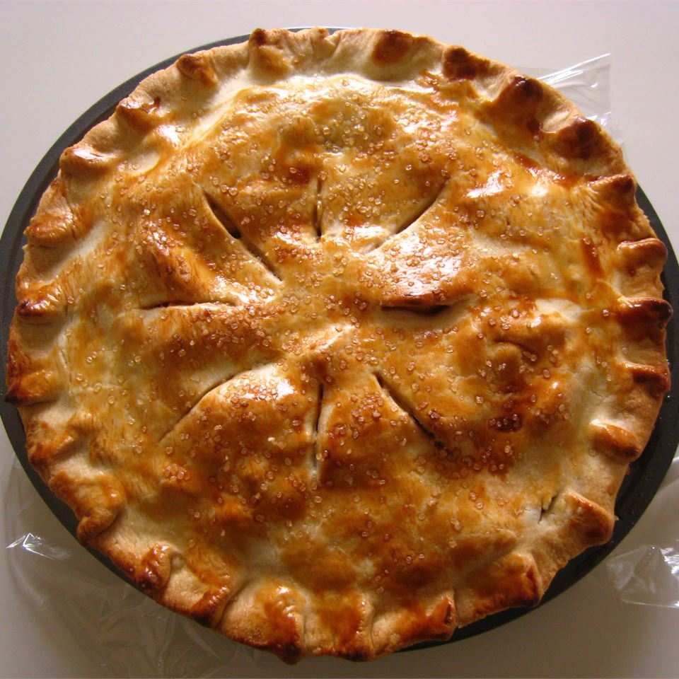

Apple Pie

Description
This apple pie has a pre-cooked apple filling.
Ingredients
- ½ cup apple juice
- 1 cup white sugar, divided
- ½ cup butter
- 6 Golden Delicious apples - peeled, cored and sliced
- 2 tablespoons cornstarch
- 1 recipe pastry for a 9 inch double crust pie
Steps
- Combine the apple juice, 1/2 cup white sugar, and butter in a large saucepan. Cook over medium heat, stirring occasionally, until sugar has melted. Add the apples and cook until fruit is tender, about 10 minutes.
- Whisk remaining 1/2 cup sugar with the cornstarch. Stir into the fruit mixture, bring mixture to a boil, then cook until juices thicken, about 2 minutes. Allow filling to cool (it will continue to thicken as it cools).
- Preheat oven to 350 degrees F (175 degrees C). Place a baking sheet on an oven rack.
- Roll out bottom crust to line a 9-inch pie pan. Roll out top crust and set aside. Pour cooled apple filling into the pie shell. Cover with the top crust and seal. Cut or poke holes in top crust to allow steam to escape.
- Bake in preheated oven on baking sheet until crust is golden brown and filling is bubbly, about 45 minutes.